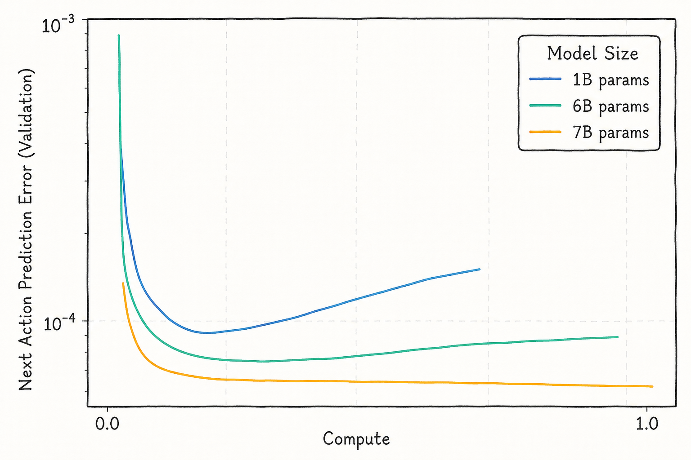
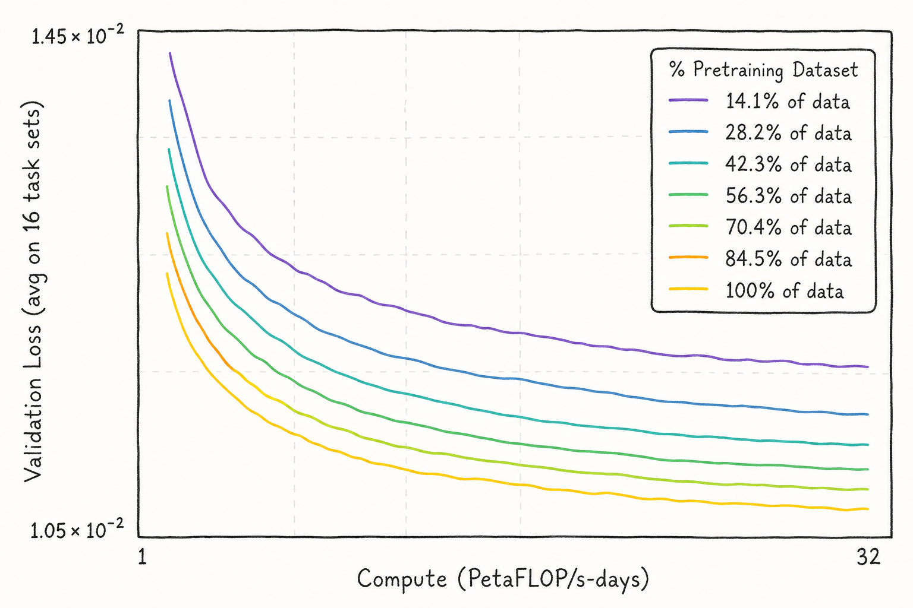
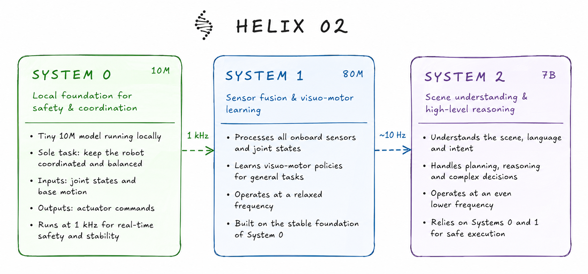

The promise of generalist robotics is automating physical work such that no human has to perform dirty, dangerous, or demeaning labor.
To achieve this, robots must be able to perform a wide range of tasks, adapt to a broad variety of environments, and handle an indefinite number of unexpected scenarios. This requires much more intelligent physical AI models than we have now—models trained on extremely large corpora and equipped with deep reasoning capabilities.
We think this necessarily results in substantially larger models that simply will not fit on GPUs on-board the robot. Their “brains” will live in the cloud, served on powerful, shared infrastructure.
Conventional wisdom says that running robotic AI models in the cloud is a terrible idea. For robots, reaction speed is critical for both performance and safety, while the internet is slow and unreliable. Robot builders want the most intelligent models, which tend to be large, but the challenge of remote inference forces them to work within the constraints of smaller models on the machine itself. How can network latency possibly allow robots to react quickly and safely to spontaneous changes in the world?
Off-board inference appears to introduce an insurmountable number of engineering problems relating to speed, reliability, control, and safety. Running models locally guarantees the tight control loops that enable smooth, responsive actuator reactions—the reason so much recent work focuses on efficient edge inference.
We believe the tractability of this “fast intelligence” problem changes when we flip the direction of thinking: away from the difficult research problem of compressing intelligence into a small number of parameters, and toward the engineering problem of enabling large, capable models to run quickly and reliably over a remote connection.
Scaling Laws are Here to Stay
We, like others, believe that the next waves of progress in generalist robotics will adhere to scaling laws. We first saw sparks of general world knowledge in embodied AI with DeepMind’s RT-2. Its demo of moving a Coke can to an image of Taylor Swift was only possible because a vision-language model’s web-scale pretraining gave it knowledge about the world.
Robot-specific data has continued to scale, yielding transfer to unseen environments and objects. Generalist systems now use hundreds of thousands of hours of robot data to achieve robust dexterous manipulation, offering growing evidence for scaling laws analogous to those observed in language models.


Beyond data, robot performance also increases with model size. Smaller models can ossify and stop learning beyond a certain point, while models in the tens of billions of parameters show more promise of generalizing. This pressure is accelerated by the shift toward world models, which use future-state prediction and spatiotemporal priors from video foundation models.
World Action Models are even more compute-intensive. They generate future frames autoregressively and apply diffusion within each generation. Video is expensive to work with, and the most capable systems increasingly strain both memory bandwidth and raw compute.
The State of On-board Compute
There are only a handful of practical hardware options for on-board inference today. Many frontier robotics labs rely on NVIDIA’s Jetson AGX series. Two of the most common options illustrate the tradeoff:
| Module | Performance | RAM | Memory bandwidth |
|---|---|---|---|
| Jetson AGX Orin | 275 TOPS | 64 GB | 200 GB/s |
| Jetson AGX Thor | 2070 TFLOPS | 128 GB | 273 GB/s |
Both have enough RAM to fit many current physical AI models in theory. In practice, fitting the model is only part of the problem; inference latency is punishing.
In a transformer, processing input tokens is compute-bound, while autoregressive generation becomes memory-bandwidth-bound as the system moves the key-value cache between memory and compute cores. Diffusion, meanwhile, repeatedly performs expensive calculations. Vision-language-action models and world models depend on both patterns.
Vision-language-action models attach a smaller diffusion action expert to a multimodal vision-language model. The larger model encodes intermediate representations, and the action expert turns them into controls. The model must reason about the scene, maintain context, and generate actions within a useful control horizon.
As these systems acquire more complex reasoning capabilities, cache utilization and memory bandwidth will become increasingly strained. We face a two-pronged problem: both memory and compute constraints matter when the entire system must run on a Thor or Orin inside a moving robot.
Chips will improve year after year. But the demand for stronger intelligence—and therefore model size—may outpace gains in on-board hardware. Eventually, model size reaches an escape velocity where cloud inference is the only feasible option.
Impacts on Robot Cost, Hardware, Access, and Beyond
Cost
One of the largest logistical problems with putting a powerful GPU inside every robot is that it is expensive and difficult to acquire at scale. Cloud inference replaces this up-front purchase with usage-based pricing, but the right comparison is not simply the sticker price of one local chip against one hour of a data-center GPU.
The more relevant measure is the cost per hour of productive work. Most robots will not operate continuously: they require maintenance, run out of battery, wait between tasks, and sit idle when demand is low. These periods reduce the useful hours over which hardware cost can be amortized.
With off-board compute, customers pay while the robot is generating value, while an infrastructure provider absorbs idle capacity and depreciation. Multiple robots can also be multiplexed on a single data-center GPU. The cloud is not merely a more expensive version of the same resource; it can expose much more capable compute without placing that cost, weight, and heat inside every machine.
Power & hardware
A server-class GPU also makes a meaningful claim on a robot’s battery. Adding a 120-watt compute module to a humanoid that already draws hundreds of watts can cut a significant portion of operating time. A larger battery adds weight, which makes the actuators draw more power and reduces the benefit of the extra charge.
Heat-generating compute requires cooling, chassis volume, and material constraints. Running inference in a data center with abundant power and purpose-built cooling means lighter robots, longer battery life, and fewer hardware restrictions.
Access
Access to performant physical AI is often gated by access to a powerful GPU. Small labs and development teams may lack the capital to purchase compute up front or the time to wait for scarce hardware. Even large labs lose development velocity when researchers wait for a local device to become available.
Off-board inference gives researchers access to larger models when they need them, while simplifying operations and making experimentation less dependent on the machine under test. This may matter as much to robotics adoption as raw benchmark performance.
Safety
Capability and safety are intertwined. Larger, more diversely trained models should generalize better to unfamiliar domains, recognize a wider range of hazards, and reason through complex instructions and emergencies. But it is also dangerous for a robot to have slow reflexes. Every millisecond matters when heavy equipment and strong forces are involved.
The answer is not to place every layer of intelligence in one location. We can emulate distinct modes of thought by decoupling a dedicated, on-device “System 1” from a larger “System 2” model in the cloud. Fast body control and safety remain local; dexterity, planning, reasoning, and conversation can use the most capable remote model available.

A lightweight fallback policy can feasibly sit on-device to control the body and maintain safety. The rest can move off-board to maximize performance for dexterity, reasoning, and language. This hybrid architecture makes remote intelligence compatible with fast local reflexes.
Critiques on Off-board Inference
1. How do you deal with slow and unpredictable network latency?
Network latency is a real limitation, but its stochasticity is an engineering problem rather than a fundamental barrier. Hedged connections, modern transport protocols such as QUIC, zero-copy data transfer, and an optimized networking stack inside the robot can reduce both round-trip time and jitter.
Latency-sensitive robots may also be served differently from general internet workloads. Instead of concentrating compute in a small number of regions, providers can deploy compact clusters of hyper-local compute targeting specific areas. The network overhead then becomes one managed component of a larger control system.
2. What if the robot has no network connectivity?
Not every environment is reachable over a normal network: deep underwater, inside a mine, or on an off-grid farm. Some applications will remain on-device. Others may use satellite networks or on-premises private clouds—server racks physically deployed to the inference location.
Off-board does not have to mean a faraway hyperscale region. It means separating the robot’s embodiment from its most demanding compute, whether that compute is across the room, on the edge of a mine, or in a nearby metropolitan cluster.
3. Won’t models become compact enough to fit on-board?
Quantization, distillation, and architectural improvements will continue to make models more efficient. But these methods trade compactness against accuracy, and compressed variants grow as their base models grow. There may never be one “sufficiently capable” physical intelligence model: once a capability becomes available, people find harder and more valuable work for the system to perform.
Just as efficient open models have not eliminated demand for more capable frontier models, improved robot models are unlikely to end the demand for larger ones. The ceiling moves as intelligence improves.
Future
The future of generalist robotics depends on off-board compute. If large-scale models can run with highly optimized latency and reliability, general-purpose robots can become both more capable and safer.
The landscape is already widening beyond factories: farmers in remote areas, laundry shops, apartments, hospitals, mines, and every other place where physical work happens. Over time, we may see hyper-local mini data centers deployed wherever fleets of robots work. Mobile GPU boxes and dedicated access points could serve nearby machines in places that lack conventional infrastructure.
Eventually, we envision intelligent and safe robots solving physical problems across varied environments, enabled by the combination of powerful cloud compute, optimized network transport, and fast local safety systems.
This is the future we want to engineer into existence.